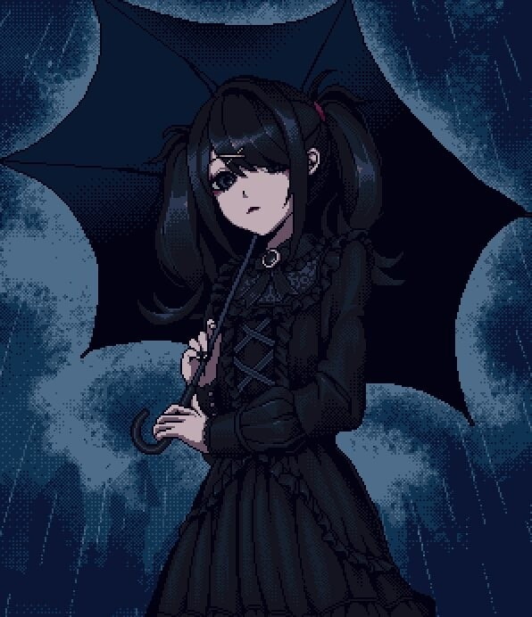

Topik
Hi, I am Topik. I am a student living in Türkiye.
I strongly support fully Free and Open Source Software.
I work on several small projects on my GitHub and I start a new one when I get an idea.
I mainly program in Python.
I know C, C++, x86 Intel Assembly and HTML at beginner level.
My favorite video game of all time, without a doubt, is Half-Life.
Windows XP is my love ♥
I use Arch btw.
I strongly support fully Free and Open Source Software.
I work on several small projects on my GitHub and I start a new one when I get an idea.
I mainly program in Python.
I know C, C++, x86 Intel Assembly and HTML at beginner level.
My favorite video game of all time, without a doubt, is Half-Life.
Windows XP is my love ♥
I use Arch btw.